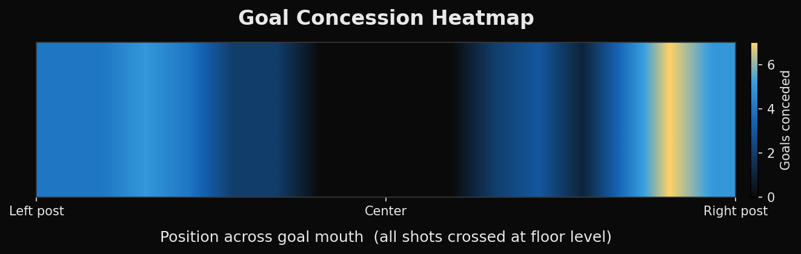
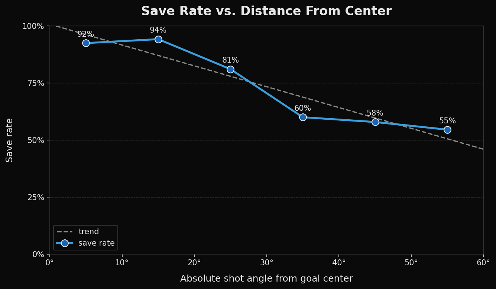

Defensive Performance Evaluation
Experimental setup
To evaluate goalie performance, we conducted a controlled experiment of 200 shot attempts taken from a range of attack angles. For each trial, we positioned the offensive robot approximately halfway across the field, at a roughly constant distance from the goal, and noted the angle it was shooting from relative to the goal center, spanning central shots through wide-angle shots out to about ±60°. We then fired the ball with the offensive robot's kicker while the defensive robot, starting from its normal central resting position, attempted to predict and block it. For every attempt we recorded the shot angle, the defender's predicted shot direction, its target defensive position, and where the ball ended up, that is, whether it was saved or where it crossed into the goal. Shooting distance, kicker strength, and the defender's starting position were kept consistent across trials, and human and mechanical errors were minimized to ensure the repeatability of this experiment.
Analysis approach
The collected data was analyzed to measure save rate under different shooting conditions and to locate where failures occurred within the defensive process. We grouped the shots into angle bins so that save rate could be plotted as a function of attack position. A goal-concession heatmap was generated from where each conceded goal crossed the line; we recorded the locations as zones across the width of the goal mouth (left post, between left post and center, center, between center and right post, right post) and aggregated them to reveal defensive weaknesses spatially. We also tracked the success of each stage of the defensive sequence, ball detection, shot prediction, positioning, and save execution, so that any failure could be traced to the specific stage responsible rather than only to the final outcome.
The resulting performance metrics and visualizations were used to identify weaknesses in the defensive strategy and guide subsequent software improvements. By connecting experimental results directly to algorithmic modifications, the evaluation process formed a continuous cycle of testing, analysis, and refinement.
Findings

Save rate peaked at ~94% for central shots (0–20°) and fell to 50–58% at extreme angles beyond ±40°, for a 78.5% overall. This shows the goalie handles central attacks reliably but struggles with wide shots, since those force it to travel farther to reach the ball in the same time.

Of the 43 conceded goals, nearly all crossed near the left and right posts (21 left, 22 right) with none through the center, all at floor level. This confirms the goalie's weak spots are the wide corners it can't reach quickly enough, pointing to lateral travel speed rather than perception as the main limitation.

Plotted in 10° increments, the save rate falls from ~92% for near-central shots (0–10°) to ~55% at the widest angles (beyond 40°), with the fitted trend line confirming a clear downward slope as shots move away from center. The small bumps between bins are sampling noise from fewer shots at wide angles, but the overall pattern is unambiguous: the goalie gets beaten far more often the farther it has to travel laterally, which points to movement speed rather than perception as the limiting factor.
Improvements
In response to the trends identified in our testing, we first tuned the goalie's speed PID further. We made the goalie accelerate more on large differences between its current position and its target defensive position created by wide-shot goals, and slow down more smoothly as it closes in. As a result of this change, the positional error collapses to zero faster, allowing the goalie to reach its intercept point sooner and increasing its chances of blocking wide-shot goals. After repeating the same tests with the newly tuned PID, we found significantly better results, with the save rate at 0 degrees reaching almost 100%.